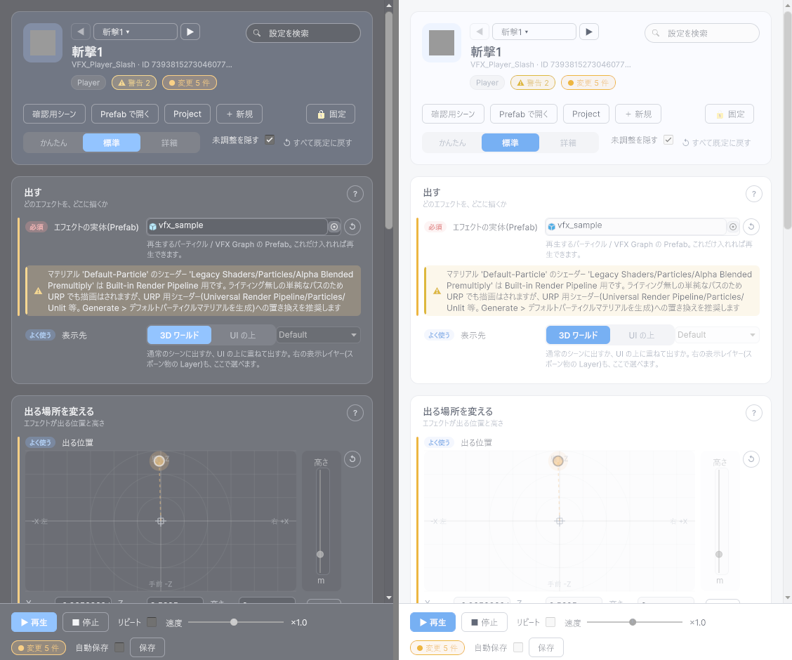

最終更新日: 2026-10-13
VFX Editor は、エフェクト（VFX）をゲームを実行せずにその場で再生しながら調整するウィンドウです。設定は「やりたいこと」ごとのカード（出す / 出る場所を変える / 長さ・消え方を変える / 見た目を調整する / 音・イベントと合わせる）に並んでいて、使う欄だけが見えます。できること:
対象のデータを選んでいない（空の）ときは、ウィンドウの「サンプルを作る」ボタンでサンプルのデータを作って試せます（Assets/GameData/<種別>/Sample/ にカテゴリ Sample で作られます。同じものが既にあれば、作らずそれを選びます）。
Tools > D-Drive > Editors > VFX Editor、または VFX データの Inspector の一番上にある「VFX Editor で開く」、または Asset Browser の行のダブルクリック
| 部品 | 説明 |
|---|---|
| ◀ ▶ と名前のボタン | 同じカテゴリの VFX データを順に切り替えます。名前のボタンで最近使ったものも選べます。 |
| 設定を検索 | 欄の名前・説明・検索語に一致する設定だけを出します（例: 高さ / ループ / レイヤー）。×で解除。 |
| 警告・変更のチップ | 検証の警告数と、まだ保存していない変更の数。 |
| 確認用シーン | VFX 確認用シーンを開く（無ければ生成）。ライト・カメラ・ポストプロセス・床が入っています。 |
| Prefab で開く | 対象 VFX の Prefab をプレハブモードで開きます。ParticleSystem そのものを編集したいときに（下の「Prefab の中で再生する」参照）。 |
| Project | 対象アセットを Project ウィンドウでハイライト。 |
| ＋ 新規 | 新しい VFX データを作ります。 |
| 固定 | ON にすると、Project ウィンドウで別のものを選んでも対象が切り替わりません。他のアセットを見ながら 1 つを調整したいときに。 |
| かんたん / 標準 / 詳細 | 見せる欄の量。かんたん=必須の欄だけ（Prefab を入れて ▶ で確かめるところまで）/ 標準=よく使う欄まで / 詳細=すべての欄。 |
| 未調整を隠す | 詳細モードで、既定値のままの設定をカードごとの「未調整の設定」に折りたたみます。 |
| ↺ すべて既定に戻す | 既定値と違う設定をすべて既定に戻します（確認あり。管理情報は対象外）。各欄の右の ↺ でその欄だけ戻せます。 |
| 操作 | 説明 |
|---|---|
| ▶ 再生 / ■ 停止 | ゲームを実行せずにその場で再生。SceneView を見てください。Hierarchy には「[D-Drive] VFX Preview」という一時的な入れ物が現れ、その下にエフェクトが出ます（シーンには保存されません）。Anchor に生成ディレイを設定した VFX も、遅れて出た分がこの入れ物にまとめられ、■ 停止でちゃんと消えます。再生中は「▶ やり直し」になります。 |
| リピート | ON にすると、1 回で終わるエフェクト（OneShot / Duration）が終わるたびに自動でもう一度出ます。何度も ▶ を押さずに調整できます。ずっと出続けるエフェクト（Loop）には関係ありません。 |
| 速度 | 再生速度（0.1〜2 倍）。ゆっくりにして細部を見る、速くして全体の印象を見る、といった使い方。右の「×1.0」を押すと等倍に戻ります。データには保存されません。 |
| 変更 N 件 / 保存 | まだ保存していない変更の数。「保存」でアセットに書き込みます（保存のたびに版数が進みます）。ウィンドウを閉じる・対象を切り替えるときに未保存があると確認が出ます。 |
| 自動保存 | ON にすると、編集が止まって 1 秒たつと自動で保存します（再生中でも）。 |
Ctrl+Z / Ctrl+Y で戻せます。ウィンドウの値・出ているエフェクトの位置・SceneView の表示が一緒に戻ります。
どのエフェクトを、どこに描くか。項目の意味は VFX の設定項目 を見てください。
| 項目 | 説明 |
|---|---|
| エフェクトの実体（Prefab） | 再生するパーティクル / VFX Graph の Prefab（必須）。再生中に差し替えると、自動で新しい Prefab に出直します。マテリアルが URP 向けでないなどの検証結果は、この欄の下に出ます。 |
| 表示先 | 「3D ワールド」か「UI の上」。UI の上を選ぶと右の表示レイヤー（スポーン物の Layer）も選べます。 |
| ライトの当たり方（Light Layer） | どのライトを受けるか（詳細）。0 なら Prefab の設定のまま。 |
「エフェクトをどこに出すか」を決めます。再生中に動かすと、出ているエフェクトがその場で動きます（停止→再生の押し直しは不要）。
| 項目 | 説明 |
|---|---|
| 出る位置（パッド） | 上から見た前後左右（X/Z）のずれを、四角の中のドラッグで決めます。右のスライダーは高さ（Y）。数字でも入力でき、「原点へ」で 0 に戻せます。 |
| 出る場所の基準 | 「スポーン先」に、シーン内のキャラクターや AnchorRig を入れると、Anchor で指定したボーン名などをその中から探してそこに出します。空のままなら、Anchor のオフセットがそのままワールド座標になります。「Path を一覧から選ぶ」で、スポーン先の中にあるボーン・オブジェクトを選べます（★ 付きは AnchorPoint。選ぶと Space も自動で切り替わります）。基準が見つかっているかは「解決: ✓ / ⚠」で分かります。「SceneView に表示」を ON にすると、SceneView に位置の目印が出ます（下記）。 |
| 位置の全設定（詳細） | Space（World=固定座標 / BoneName・NamedObject=スポーン先の中から Path の名前を探す / ContextTarget=スポーン先そのもの）・Path・Local Offset・Local Euler（向き）・Local Scale（エフェクト全体の大きさ倍率。(0,0,0) は 1 扱い）・Follow Rotation（基準が回転したらエフェクトも一緒に回る）・Detach On Stop（基準のキャラクターが消えてもエフェクトはその場に残って最後まで再生される。斬撃の軌跡など）。 |
| 共通の出る位置（Anchor アセット、詳細） | 複数の VFX で位置を共有したいときに Anchor データを入れます。設定すると埋め込みの位置は使われません。「Anchor Editor で開く」で位置・ランダム・ディレイを調整、「埋め込みをアセット化」で今の設定から Anchor データを作れます。 |
SceneView で動かす: 「SceneView に表示」が ON のとき、エフェクトの位置に基準・線・移動ハンドル（矢印）が出ます。このウィンドウを最後にクリックしていればドラッグで直接動かせ、値はこのウィンドウに戻ってきます。回転ツール（E キー）に切り替えると回転ハンドルになります。Anchor Editor など他の D-Drive ウィンドウも開いているときは、最後にクリックしたウィンドウだけがハンドルを出し、他は薄い目印だけになります（欄の下の「SceneView: …が描画中」の案内で確認できます）。
「再生の終わり方」「続く秒数」「停止後の余韻」を 1 本のバーで編集します。上のボタンで一回で終わる（OneShot）/ 止めるまで続く（Loop）/ 秒数で終わる（Duration）を選び、バーの端をドラッグするか下の数字で秒数を決めます。「続く 1.00 秒 + 余韻 0.00 秒 = 合計 1.00 秒」のように合計も表示されます。OneShot でも、秒数は終了判定の保険に使われます。
詳細モードでは「動作の取り決め（Pool / ポーズ / ネット）」も出ます。Loop のときは Pool の上限を設定してください（分からなければプログラマーに相談）。
VFX データで「公開」した色・サイズなどの調整つまみが並びます。再生中に回すと出ているエフェクトにその場で反映されるので、色味の調整に便利です。ここで変えた値はデータの既定値として保存されます。
「＋ つまみを追加」から、色・サイズ・速度・強さ・不透明度・寿命などの分類を選ぶか「自由入力」で、公開する項目そのものを増やせます。TargetProperty（マテリアルのプロパティ名。例: _BaseColor）が Prefab のマテリアルに無いと、この欄の下に赤い表示が出ます。
詳細モードの「きっかけで鳴らす・出す（イベント）」で、「エフェクトが出た瞬間に効果音を鳴らす」など連動する動作を設定します。OnSpawn（出た瞬間）/ OnLoop（ループ 1 周ごと）/ OnDestroy（消えたとき）などのタイミングを選び、鳴らす SE などを指定します。
「打撃 + 火花 + 煙」のように、いくつかのエフェクトを重ねたときの見え方を確認します（詳細モード）。空欄に VFX データを入れて各行の ▶ を押すと同時に出ます。■ で個別に止められます（最大 8 つ）。スポーン先はメインの VFX と共通です。
表示名・カテゴリ・説明・タグ・アイコン・担当者・仕様書 URL・変更メモ。Asset Browser の一覧に出る情報です。
設定ミスは、該当する欄の下に出ます（Error=赤は直さないと正しく動きません、Warning=黄は確認推奨）。どの欄にも当てはまらないものは「その他の検証」にまとまります。設定を変えると自動で更新されます。
ParticleSystem の細かい設定（放出数・寿命・色のカーブなど）は Prefab の中で編集します。その作業中も、このウィンドウの再生機能がそのまま使えます。
| 表示 | 意味と対処 |
|---|---|
| Prefab が未設定(または Missing)です | 再生する実体が無い状態。「出す」カードの Prefab にエフェクトの Prefab を入れてください。 |
| マテリアル '…' のシェーダー '…' は Built-in Render Pipeline 用ですが、プロジェクトは URP です | 古い（Built-in 用）シェーダーのマテリアルは URP では見た目が変わることがあります。Tools > D-Drive > Generate > デフォルトパーティクルマテリアルを生成 で URP 用のマテリアルを作り、Prefab の ParticleSystem Renderer に設定してください。 |
| Params '…' の TargetProperty '…' が Prefab のマテリアルに存在しません | 調整つまみのプロパティ名が間違っています。マテリアルの Inspector でプロパティ名（_BaseColor など）を確認して合わせてください。 |
| LifeMode=Loop ですが Pool 上限が未設定です | ずっと出続けるエフェクトが際限なく増える危険があります。プログラマーに相談してください。 |
| 解決: ⚠ '…' が見つかりません | Anchor の Path の名前がスポーン先の中にありません。「Path を一覧から選ぶ」で選び直してください。 |
| 開いているシーンにカメラ・ライトがありません | 上部の「確認用シーン」を押してください。 |